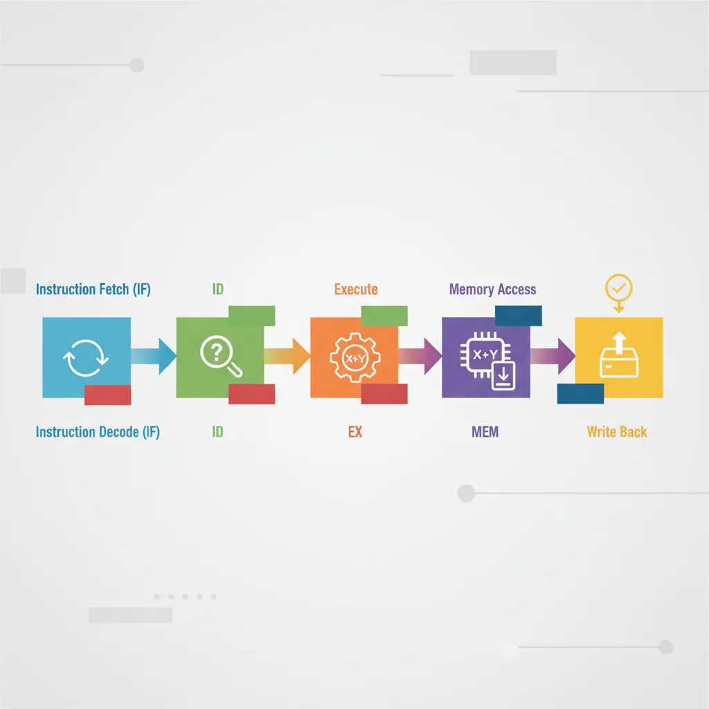

Introduction
CPU pipelining is a fundamental technique that allows processors to execute multiple instructions simultaneously by overlapping their execution stages. Understanding pipelining reveals how modern CPUs achieve high throughput despite instruction-level dependencies.

Classic 5-Stage CPU Pipeline
flowchart LR
IF["IF\nInstruction\nFetch"] --> ID["ID\nInstruction\nDecode"]
ID --> EX["EX\nExecute /\nALU"]
EX --> MEM["MEM\nMemory\nAccess"]
MEM --> WB["WB\nWrite\nBack"]
IF -.->|"Hazard\nDetected"| STALL["Pipeline\nStall"]
STALL -.-> IF
EX -.->|"Data\nForwarding"| ID
Series Context: This is Part 7 of 24 in the Computer Architecture & Operating Systems Mastery series. Building on compilers and program translation, we now explore how CPUs execute instructions efficiently through pipelining.
Computer Architecture & OS Mastery
Your 24-step learning path • Currently on Step 7
1
Part 1: Foundations of Computer Systems
System overview, architectures, OS role2
Digital Logic & CPU Building Blocks
Gates, registers, datapath, microarchitecture3
Instruction Set Architecture (ISA)
RISC vs CISC, instruction formats, addressing4
Assembly Language & Machine Code
Registers, stack, calling conventions5
Assemblers, Linkers & Loaders
Object files, ELF, dynamic linking6
Compilers & Program Translation
Lexing, parsing, code generation7
CPU Execution & Pipelining
Fetch-decode-execute, hazards, prediction8
OS Architecture & Kernel Design
Monolithic, microkernel, system calls9
Processes & Program Execution
Process lifecycle, PCB, fork/exec10
Threads & Concurrency
Threading models, pthreads, race conditions11
CPU Scheduling Algorithms
FCFS, RR, CFS, real-time scheduling12
Synchronization & Coordination
Locks, semaphores, classic problems13
Deadlocks & Prevention
Coffman conditions, Banker's algorithm14
Memory Hierarchy & Cache
L1/L2/L3, cache coherence, NUMA15
Memory Management Fundamentals
Address spaces, fragmentation, allocation16
Virtual Memory & Paging
Page tables, TLB, demand paging17
File Systems & Storage
Inodes, journaling, ext4, NTFS18
I/O Systems & Device Drivers
Interrupts, DMA, disk scheduling19
Multiprocessor Systems
SMP, NUMA, cache coherence20
OS Security & Protection
Privilege levels, ASLR, sandboxing21
Virtualization & Containers
Hypervisors, namespaces, cgroups22
Advanced Kernel Internals
Linux subsystems, kernel debugging23
Case Studies
Linux vs Windows vs macOS24
Capstone Projects
Shell, thread pool, paging simulatorData Forwarding (Bypassing)
Without Forwarding (Stall required):
══════════════════════════════════════════════════════════════
I1: ADD R1, R2, R3 # Writes R1
I2: SUB R4, R1, R5 # Reads R1 ← needs I1's result
1 2 3 4 5 6 7 8
I1: IF ID EX MEM WB
I2: IF ID -- -- ID EX MEM WB
↑ ↑↑ ↑
Detects Stall Retry after R1 written
hazard (bubbles)
→ 2 cycle penalty
With Forwarding:
══════════════════════════════════════════════════════════════
┌─────────────────┐
│ Forwarding │
│ Unit │
└────────┬────────┘
│
1 2 3 4 5 │
I1: IF ID EX MEM WB │
│ │
I2: IF ID EX MEM WB
↑
Receives R1 value directly from I1's EX output!
→ 0 cycle penalty (data arrives just in time)
Load-Use Hazard: Even with forwarding, loads require at least 1 stall. The data isn't available until after MEM stage, but the next instruction needs it in EX. This is called a "load-use hazard" and requires a "load delay slot."